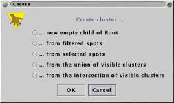

Using
Clusters to group things together
Using
Clusters to group things togetherTutorial: Working with Clusters
This document describes the different parts of maxdView that allow you to create and visualise clusters.
Using
Clusters to group things together
Clusters are useful for storing groups of Spots, Probes Genes and Measurements.
If you have used a filter to select an interesting set of Spots, creating a Cluster will allow you to quickly identify those Spots at a later time.
For a practical example, we will use the the demonstration data file "tutorial1.maxd". See the Getting started tutorial for details on where to find this file.
Once you have loaded "tutorial1.maxd", use a filter a isloate some of the Spots. For example use Filter by Name or Value to select spots with "enzyme" in their Gene names.
Start the Cluster Manager plugin. Selecting the "Create" option on the "Cluster" menu displays the following dialog box:

Select the second option, "...from filtered Spots", then provide a name for the new Cluster. The newly created Cluster will have all of the Spots which pass through the filter as its elements.
You will be able to see this new Cluster in the Cluster Managers tree viewer. The new Cluster is allocated a random colour and glyph. The controls in the Cluster Manager allow you to change these properties.
After you disable the filter (by closing its window) the new Cluster `remembers' which Spots were selected by the filter. If you use a plugin which can display Clusters, for example the Scatter Plot, you will be able to see the Cluster glyphs identifying the previously filtered Spots.
Repeat the Cluster creating process using a different filter then use a viewer plugin to compare the two Clusters.
The Cluster Manager provides several other ways of creating Clusters, such as loading names from a file or by combining existing clusters.
Generating files for the Cluster Manager to load
One method for loading Cluster data into maxdView is to generate files that the Cluster Manager can read.
The simplest format 'List of Names' allows you to specify a single cluster in a file. Each line of the file should contain exactly one name, for example:
YBR042c YBR108 YBL012a YBL012b YLC0981
You can specify any name or name attribute to match with. If one or more of the elements in the file match existing data then a cluster will be created. Names that are not recognised are ignored.
The 'Native' file format allows you to create a hierarchy of clusters from a file. The format is human-readable and uses XML syntax. See the File Formats for more details.